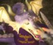

|  | Errata for Compilers: Principles, Techniques, and Tools, Second Edition (Printings Prior to Spring, 2008) |
Found an error not listed in the table below or in the Latest Errata Sheet? Please send email to ullman at gmail dt com.
| Location | Problem | Reported By | Date Reported |
|---|---|---|---|
| p. 9, l. -4 | "Chapters" should be "Chapter". | Philippe Deschamp | 2/16/07 |
| p. 23, l. -10 | "violating" should be "with" | Philippe Deschamp | 2/16/07 |
| p. 29, l. -5 | Delete "a" before "block". | Oralee Nudson | 9/21/07 |
| p. 31, l. -4 | "most recently called procedure" should be "most recently called, not-yet-terminated, procedure". | Philippe Deschamp | 2/16/07 |
| p. 32, l. 9 | Parenthesis missing after "method". | Philippe Deschamp | 2/16/07 |
| p. 32, l. -6 and -3 | The value printed on l. -6 is 2 and the value printed on line -3 is 3. | Matko Botincan | 12/16/06 |
| p. 34, l. 14 | "a[2]" should be "a[i]". | Deian Stefan | 1/20/07 |
| p. 34, l. -11 | "changes this location" should be "changes the value in this location". | Philippe Deschamp | 2/16/07 |
| p. 36, l. -9 | The closing parenthesis for the printf needs to go after the a. | Terry Wilcox | 12/31/06 |
| p. 41, Fig. 2.4(a) | The > at the right child of the root should be <. | Matko Botincan | 12/16/06 |
| p. 41, l. -2 | "Section 2.8(a)" should be "Section 2.8". | Rick Hanson | 9/15/07 |
| p. 42, l. 3 | "the are" should be "are the". | Matko Botincan | 12/16/06 |
| p. 60, l. -7 | "infix" should be "prefix". | David Heise | 6/24/07 |
| p. 71, l. 3 | "the productions for" should be "one production for". | Igor Krassikov | 12/8/06 |
| p. 88, l. -11 | Field next should be prev. | Matko Botincan | 12/16/06 |
| p. 91, l. 18 | "decls" should be "decl". | Naoya Tozuka | 8/21/07 |
| p. 107, l. -14 | "vales" should be "values". | Takao Bogaki | 9/21/07 |
| p. 110, l. -5 | Replace "where the scanner produces the sequence of tokens as output" by "which produces tokens from the output of the scanner". | Benoit Sagot | 4/18/07 |
| p. 114, l. -9 | semicolon missing after float x. | Philippe Deschamp and Benoit Sagot | 9/28/07 |
| p. 118, box, l. -3 | Delete "be". | Matko Botincan | 1/29/07 |
| p. 120, l. -1 | No underscore after digit. | Igor Krassikov | 12/8/06 |
| p. 124, l. -5 | Underscore needed after second letter. | Matko Botincan | 1/29/07 |
| p. 125, Exercise 3.3.4, l. 2 | "lexeme is" should be "lexemes are". | Francois Thomasset | 9/28/07 |
| p. 127, Fig. 3.8, l. -5 and Exercise 3.3.9, l. 2 | a[1,5] should be a{1,5}. | Igor Krassikov | 12/16/06 |
| p. 127, l. -1 | sort.c should be sort1.c. | Igor Krassikov | 12/16/06 |
| p. 128, Exercise 3.3.12, l. 5 | Delete the first "e preceding". | Igor Krassikov | 12/16/06 |
| p 133, line 12 of Sect. 3.4.3 | "digit or a dot" should be "digit, dot, or E". | Igor Krassikov | 12/16/06 |
| p. 135, l. -12 | Lexeme >= should be >. | Igor Krassikov | 12/16/06 |
| p. 136, l. -7 (excluding diagram) | "n states" should be "n+1 states". | Rick Hanson | 9/15/07 |
| p. 150, l. 5 below Fig. 3.26 | "we" should be "We". | Naoya Tozuka | 9/4/07 |
| p. 154, l. -10 | "Fig. 3.29" should be "Fig. 3.34". | Naoya Tozuka | 9/4/07 |
| p. 154, l. -2 | Right parenthesis missing after {3,8}. | Igor Krassikov | 12/18/06 |
| p. 155, l. 5 below figure | State 5 is also in its own ε-closure. | Daniel Szabo | 12/16/06 |
| p. 155, Fig. 3.35, last line | State 3 should be state 4 in the line for DFA state E. | Daniel Szabo | 12/16/06 |
| p. 156, Algorithm 3.22, OUTPUT line | M should be N. | Daniel Szabo | 12/16/06 |
| p. 157, Fig. 3.38, line (13) | Square brackets needed around t. | Igor Krassikov | 12/18/06 |
| p. 158, l. -16 | Fig. 3.39 should be Fig. 3.38. | Igor Krassikov | 12/18/06 |
| p. 158, l. -8 | "lines (11)" should be "lines (12) and (13)". | Naoya Tozuka | 9/4/07 |
| p. 159, l. 2 below box (also p. 158, l. -2) | First parentheses after big-oh does not belong. | Igor Krassikov | 12/18/06 |
| p. 164, l. -6 | "Algorithm 3.23" should be "Algorithm 3.20". | Naoya Tozuka | 9/4/07 |
| p. 165, second and fourth complete paragraphs | There are at most 2|r| states and 4|r| transitions, not half these numbers as was stated in these two paragraphs. | Christos Chryssochoidis | 6/9/07 |
| p. 173, Exercise 3.8.4 | a, b, c, and d should be boldface in each of the expressions. | Igor Krassikov | 12/25/06 |
| p. 178, header of Fig. 3.60 | "Node n" should be "Position n". | Naoya Tozuka | 9/15/07 |
| p, 181, l. -4 and p. 183, first line below box | "state state" should be "start state". | Igor Krassikov | 1/2/07 |
| p. 184, l. -9 | {7} does not belong in this list. | Igor Krassikov | 1/3/07 |
| p. 186, l. 5 | "=" should be "==". | 2/8/07 | |
| p. 194, l. -7 | The statement is true only if the method returns a value. | Matko Botincan | 1/29/07 |
| p. 202, l. 7 below Fig. 4.3 | "jth leaf" should be "jth non-ε leaf". | Benoit Sagot | 7/13/07 |
| p. 212, l. -12, -10 | ε is needed as an alternative production body for E' and T'. | Igor Krassikov | 1/10/07 |
| p. 218, l. -4 | Comma at end of sentence is a period. | Igor Krassikov | 1/11/07 |
| p. 224, l. -4 | "FIRST(A)" should be "FIRST(α)". | Ludovico Rossi | 1/3/07 |
| p. 227, Fig. 4.20 | The explanation should make clear that ip is the input pointer and a is the symbol ip points to. | Igor Krassikov | 1/14/07 |
| p. 228, l. -2, -1 | Delete one "the". | Philippe Deschamp | 6/24/07 |
| p. 232 Exercise 4.4.6 | The hint for (b) is really a hint for (a). | Igor Krassikov | 1/16/07 |
| p. 232, Exercise 4.4.7, l. 1 | The form of a single production is A→B for any nonterminals A and B. | Igor Krassikov | 1/16/07 |
| p. 233, Fig. 4.24, last line | → should be |. | Benoit Sagot | 7/13/07 |
| p. 234, l. -3 | "reduced to T" should be "reduced to F". | Icarus Xu | 4/29/07 |
| p. 235, Fig. 4.26. | The last step should really be two steps, one in which T*F is reduced to T and then another, where T is reduced to E. | Rick Hanson | 10/16/07 |
| p. 238, l. -2 | "next input symbol" should be "next k input symbols". | Benoit Sagot | 7/13/07 |
| p. 244, l. -3 | Left side of the production is F, not E. | Ludovico Rossi | 1/3/07 |
| p. 246, Fig. 4.33, l. 2 | C should be initialized to be the set containing the initial set of items, not to that set of items itself. | Christos Chryssochoidis | 6/24/07 |
| p. 260, l. 4 | It should be made clear that a is the current input symbol. | Igor Krassikov | 1/22/07 |
| p. 261, l. -9 | C should be initialized to be the set containing the initial set of items, not to that set of items itself. | Christos Chryssochoidis | 6/24/07 |
| p. 265, l. -11 | "Algorithm 4.44" should be "Algorithm 4.56". | Igor Krassikov | 1/22/07 |
| p. 268, Alg. 4.59, item (4), l. 2 | The intersection signs should be union. | Igor Krassikov | 1/23/07 |
| p. 271, l. -9 | Item (2) really belongs with item (1), and item (3) represents the second of the "two ways" mentioned on l. -17. | Igor Krassikov | 1/25/07 |
| p. 274, l. -12 | Dot needed in front of S. | Igor Krassikov | 1/25/07 |
| p. 276, l. -7 | Remove the line ") s11" from this list. | Igor Krassikov | 1/26/07 |
| p. 282, l. -3 of text | "Fig. 4.48" should be "Fig. 4.50". | Igor Krassikov | 1/28/07 |
| p. 285, l. -6 | Vertical bar missing after ... | Igor Krassikov | 1/28/07 |
| p. 286, Fig. 4.55 | The θ's should be subscripted. They should be θn, θn-1, and θ1, from the top. | Igor Krassikov | 1/28/07 |
| p. 291, l. -11 | ( E ) is omitted as an alternative production. | Igor Krassikov | 1/28/07 |
| p. 293, l. -1 | Second alternative production should have * instead of +. | Igor Krassikov | 1/28/07 |
| p. 295, l. 8 | The "e"'s after the backslashes should not appear. | Igor Krassikov | 1/30/07 |
| p. 295, l. -9 | No dot needed in the production A→error | Igor Krassikov | 1/28/07 |
| p. 302, items 24 and 25. | Capitalize "syntax" in item 24 and "proc." in item 25. | Igor Krassikov | 1/30/07 |
| p. 311, caption of Fig. 5.6 | "E2.val" should be "T.val". | Igor Krassikov | 2/8/07 |
| p. 316, Fig. 5.9 | The leaf labeled real should be labeled float. | Valerio Genovese | 11/20/06 |
| p. 327, l. -3 | "3" is just an example of a digit. | Igor Krassikov | 2/15/07 |
| p. 330, Fig. 5.23 | There are two places where Y1,y should be Y1.y. These are the left child of the root in (a) and the right child of the right child of the root in (b). | Valerio Genovese | 11/26/06 |
| p. 331, l. 2 | Right parenthesis missing after Y.y. | Valerio Genovese | 11/26/06 |
| p. 343, l. 3 | The line should read: "same as the return value in Fig. 5.29". | Igor Krassikov | 2/18/07 |
| p. 344, l. -5 | eliminate one "the". | Bernard Lorho | 3/25/07 |
| p. 354, l. -3 | "Odgen" should be "Ogden". | Igor Krassikov | 9/21/07 |
| p. 355, l. -3 | Comma needed after "(1995". | Igor Krassikov | 9/21/07 |
| p. 359, l. 3 | "codes" should be "nodes". | Philippe Deschamp | 2/17/07 |
| p. 359, l. -6 | Comma missing at the end of the line. | Philippe Deschamp | 2/17/07 |
| p. 363, Exercise 6.1.2(c) | Delete second left parenthesis | Philippe Deschamp | 2/17/07 |
| p. 364, l. -10 | Delete "shift operators" from the list. These are actually binary, since they typically take a data argument and a number of places to shift. | Francois Thomasset | 6/10/07 |
| p. 365, line above footnote | "Fig. 6.9" should be "Fig. 6.9(a)" | Philippe Deschamp | 2/25/07 |
| p. 368, caption for Fig. 6.11 | The assignment represented is a = b*-c+b*-c;. | Jean Honorio | 5/16/07 |
| p. 375, Fig. 6.15 | After C in the first production should be the action
| Francois Thomasset | 4/10/07 |
| p. 375, Fig. 6.16 | The left child of the root should be B, not N. | 4/10/07 | |
| p. 381, l. 18 and p. 382, l. 19 | Java doesn't really store two-dimensional arrays in row-major form, but rather as one-dimensional arrays of references to one-dimensional arrays, so the efficiency of these formulas cannot be obtained. | Mats Cedvall | 1/3/07 |
| p. 381, eq; (6.6) | Extra left parenthesis needed after first ..., i.e., base+((...(( | Igor Krassikov | 3/11/07 |
| p. 383, Fig. 6.22, l. 2 | L.addr.base should be L.array.base. | Christos Chryssochoidis | 7/9/07 |
| p. 383, Fig. 6.22, l. -2 | Delete right } | Igor Krassikov | 3/11/07 |
| p. 386, l. 5 | Delete "how" | Philippe Deschamp | 2/25/07 |
| p. 386, Exercises 6.4.6 and 6.4.8 | It must be stated that A is stored row-major. | Philippe Deschamp | 2/25/07 |
| p. 389, item 2, l. 1 | "widen an address" should be "widen the contents of an address" | Philippe Deschamp | 3/11/07 |
| p. 389, item 2, l. 4 | Omit the name t for the temporary. It should not be confused with the name of the type. | Philippe Deschamp | 3/11/07 |
| p. 394, l. 12 | "E1" should be "E2". | Francois Thomasset | 4/14/07 |
| p. 397, l. 10 | Parentheses needed around the condition of the if-statement | Igor Krassikov | 3/11/07 |
| p. 397, l. -9, -5 | The words "set" on l. -9 and "true" on l. -5 should be in italics. | Phillipe Deschamp | 3/11/07 |
| p. 406, l. 9 | Delete "is false"; i.e., the jump to L4 occurs if x>200. | Igor Krassikov | 3/11/07 |
| p. 406, l. -7 | Delete "are" after "semantic rules" | Philippe Deschamp | 3/11/07 |
| p. 408, l. -1 | "statment" should be "statement" | Philippe Deschamp | 3/11/07 |
| p. 409, l. 2 | > should be <. | Ji Hyuk Lee | 6/11/07 |
| p. 410, l. 4 | "b>=a" should be "a>=b". | Philippe Deschamp | 3/11/07 |
| p. 411 and p. 415 | The uses of emit in Figs. 6.43 and 6.46 should be gen. | Philippe Deschamp | 3/11/07 |
| p. 414, Fig. 6.45(b), line labeled 102: | "y" should be "x" | Igor Krassikov | 3/13/07 |
| p. 416, l. -2 | Hyphen needed in "for loop" | 3/11/07 | |
| p. 417, l. 1, 3, 9, and 11 | The term "loop" needs to be added before "construct" on l. 1, and before "statement" on l. 3 and 9. Also, "enclosing construct" on l. 11 should be "labeled construct". | Philippe Deschamp | 3/11/07 |
| p. 418, l. -12 | The statement should be if (E2) S4 else S6. | Philippe Deschamp | 3/13/07 |
| p. 421, Fig. 6.51, last line | Should be next:. | Philippe Deschamp | 7/5/07 |
| p. 422, l. 3 | "direction" should be "directed". | Philippe Deschamp | 3/16/07 |
| p. 422, l. -14, -13 | It is actually line 4 that assigns the return value to t3 and line 5 that assigns the result to n. | Philippe Deschamp and Igor Krassikov | 3/16/07 |
| p. 422, l. -7 | "statement" should be "bracketed statement". | Philippe Deschamp | 3/16/07 |
| p. 423, 12 lines below figure | Right parenthesis missing after "see Fig. 6.18". | Igor Krassikov | 3/16/07 |
| p. 423, l. -2 | param should be param. | Philippe Deschamp | 3/17/07 |
| p. 424, l. 4 | Add "generate" before "good code". | Philippe Deschamp | 3/17/07 |
| p. 426, l. -4 | "Share" should be "SHARE" and "committee" should be capitalized. | Philippe Deschamp | 9/6/07 |
| p. 428, l. -12, -13 | The remark makes sense only if the character array is in C or a similar language, since other languages may use more than one byte per character. | Philippe Deschamp | 3/26/07 |
| p. 429, l. -9 | dynamic should not be italic. | Philippe Deschamp | 3/25/07 |
| p. 437, l. -2 | "is" should be "are" | Philippe Deschamp | 4/7/07 |
| p. 438, 2 lines above Sect. 7.2.4 | "caller" should be "callee". | Christos Chryssochoidis | 7/13/07 |
| p. 440, l. 6 | The first "caller" should be "callee". | Philippe Deschamp | 4/7/07 |
| p. 441, Exercise 7.2.6, l. 3 | The expression after return should be x+*py+**ppz. | Igor Krassikov | 3/25/07 |
| p. 441, l. -2 | "stack frames" should be "activation records" | Philippe Deschamp | 4/7/07 |
| p. 444, l. -2 | partition should be partition. | Igor Krassikov | 3/25/07 |
| p. 445, l. 4 (numbered 3) | Omit semicolon at end. | Jaroslav Snajdr | 9/5/07 |
| p. 447, item (2) | The second item, p=q, is really a special case of item (3), which should be expanded to include np≤nq. The expanded item (3) then covers calls that are not mutually recursive, but are still at the same level of nesting. The same rule as in item (3) applies when np=nq. | Philippe Deschamp | 4/15/07 |
| p. 449, just above Sect. 7.3.8 | More to the point is that b is not in the scope of d's definition. | Philippe Deschamp | 4/18/07 |
| p. 449, l. -9 | sort should be sort. | Igor Krassikov | 3/25/07 |
| p. 451, l. -10 | "within in" should be "within it". | Philippe Deschamp | 4/29/07 |
| p. 458, l. 3 | "the memory" should be "the free memory". | Philippe Deschamp | 4/30/07 |
| p. 458, l. 16 | Add "chunks" after "space" at the end of the line. | Philippe Deschamp | 4/30/07 |
| p. 463, l. 13 | Space needed before "When". | Philippe Deschamp | 6/1/07 |
| p. 467, l. 19 | "callee" should be "caller". | Je-Min Kim | 5/4/07 |
| p. 468, l. 12 | "reachability set" should be "set of reachable objects". | Philippe Deschamp | 6/1/07 |
| p. 469, first sentence | Should read: " As a procedure exits, objects referred to by the local variables in its activation record have their counts decremented." | Philippe Deschamp | 6/1/07 |
| p. 472, l. 2-3 | Should read: "add each object referenced by the root set to list Unscanned and set its reached-bit to 1." | Philippe Deschamp | 6/1/07 |
| p. 476, line (2) of Fig. 7.25 | The objects placed in Unscanned must also be removed from Unreached. | Philippe Deschamp | 6/1/07 |
| p. 479, line (10) in Fig. 7.26 | Right parenthesis needed after "reached". | Igor Krassikov | 3/29/07 |
| p. 481, Figure 7.28, lines numbered (10) and (14) | "sizeof" should be italicized. | Igor Krassikov | 3/29/07 |
| p. 481, l. -13 | "reachable" should be "reached". | Philippe Deschamp | 6/1/07 |
| p. 489, l. -10 | "contains" should be "collects" | Philippe Deschamp | 6/1/07 |
| p. 500, l. 13 | Insert "be" between "can" and "allocated". | Philippe Deschamp | 6/1/07 |
| p. 503, item 12, l. 2 | Comma missing after "June". | Larisa Krasnozhon | 9/28/07 |
| p. 508, l. -7 | Delete "a". | Philippe Deschamp | 6/10/07 |
| p. 510, l. -3, -2 | x must be the odd register of the even/odd pair, and y can be anywhere. | Per Fransson | 5/16/07 |
| p. 515, l. -2 | The cost of the instruction is two, not three. | Igor Krassikov | 5/16/07 |
| p. 517, Exercise 8.2.5, l. 1 | "hat" should be "that". | Edward Chron | 3/26/07 |
| p. 519, l. 2 | "activation" should be "activation record". | Philippe Deschamp | 6/10/07 |
| p. 519, l. 10 | Delete "before". | Philippe Deschamp | 6/10/07 |
| p. 519, l. 20 | Delete "callee". | Philippe Deschamp | 6/10/07 |
| p. 519, l. -5 | "that assume" should be "assume that". | Philippe Deschamp | 6/10/07 |
| p. 521, l. 14 and p. 523, lines labeled 136, 328, 380, and 432 | *SP should be 0(SP). | Allan Gotlieb | 5/16/07 |
| p. 521, l. 15 | The comment on that line should be "jump to the callee". | Igor Krassikov | 4/13/07 |
| p. 522, 5 lines below Figure 8.5 | The first sentence should read: "Let msize, psize, and qsize be 20, 40, and 60, respectively. The first instruction at address 100 initializes the SP to 600, the starting address of the stack." | Philippe Deschamp | 6/10/07 |
| p. 522, l. -12 | "execution 680" should be "execution is 680". | Philippe Deschamp | 6/10/07 |
| p. 523, line labeled 160 | "ACTION12" should be "ACTION2". | Igor Krassikov | 4/14/07 |
| p. 523, line labeled 380 | opcode should be ST. | 5/16/07 | |
| p. 524, l. 6 | "For" should be "For example". | Philippe Deschamp | 6/10/07 |
| p. 528, l. -1 | Second y should be z. | Kong, Soon-Ho | 3/18/07 |
| p. 530, Fig. 8.9, block B3 | statement a[t4] = 0.0 was omitted. It belongs after the 4th line of the block. | Edward Chron | 3/26/07 |
| p. 531, l. 13 | The condition that the loop entry is not also the entry of the entire flow graph is needed. | Michael Leuschel | 10/20/07 |
| p. 533, l. 12 | "blockas" should be "block as". | Kong, Soon-Ho | 3/18/07 |
| p. 534, l. -4 | The dot after - does not belong. | Igor Krassikov | 4/17/07 |
| p. 535, l. 7 | Remove the semicolon at the end. | Jaroslav Snajdr | 9/15/07 |
| p. 539, l. -7, -6 | P must be in the scope of x, rather than vice-versa. | Philippe Deschamp | 6/16/07 |
| p. 541, Exercises 8.5.3 and 8.5.4 | "the basic block" should be "the DAG". | Kong, Soon-Ho | 3/26/07 |
| p. 542, Exercise 8.5.7 | The requirement is not that p does not change, but that nothing it can point to changes in the interim. Also, the reference to "Example 8.5.6" at the end should be to "Exercise 8.5.6". | Igor Krassikov and Philippe Deschamp | 6/16/07 |
| p. 544, l. -10 | "and" should be "an". | Igor Krassikov | 4/18/07 |
| p. 544, l. -2 | "description" should be "descriptor". | Philippe Deschamp | 6/18/07 |
| p. 545, l. 8 | "location" should be "address". | Philippe Deschamp | 6/18/07 |
| p. 547, l. 16 | "not in memory" should be "not in a register". | Igor Krassikov | 4/18/07 |
| p. 548, l. 3 | R should be v. | Jaroslav Snajdr | 9/15/07 |
| p. 548, l. 7 | "value" should be "variable". | Philippe Deschamp | 6/18/07 |
| p. 548, l. 14 | "two cases" should be "three cases". | 9/15/07 | |
| p. 550, l. 11-12 | The order of arguments is reversed in each instruction. It should
be
LD R0, a
ST a, R0
| Philippe Deschamp | 6/24/07 |
| p. 554, l. -9 | "register x" should be >"register for x". | Philippe Deschamp | 6/24/07 |
| p. 555, l. 1 | Delete one "the". | Philippe Deschamp | 6/24/07 |
| p. 556, l. -13 | "Similarly" should be "However". | Igor Krassikov | 4/19/07 |
| p. 558, l. 2 | "on machines" should be "for machines". | Philippe Deschamp | 6/28/07 |
| p. 563, l. -2 | "SP" should be "sp". | Igor Krassikov | 4/29/07 |
| p. 564, l. -12 | Delete "quality of". | Philippe Deschamp | 6/28/07 |
| p. 567, l. -8 | "the nodes" should be "each node". | Philippe Deschamp | 6/28/07 |
| p. 567, l. -3 | "any leaf" should be "all leaves". | Philippe Deschamp | 6/28/07 |
| p. 569, l. 9 | Comma missing after ... | Philippe Deschamp | 6/28/07 |
| p. 569, items 1(a,b,c) | Indexes on registers are each one too high. Rk should be Rk-1 and Rk-1 should be Rk-2. | Jaroslav Snajdr | 9/28/07 |
| p. 569, l. -17 [first line of item 2(b)] | "small" should be "little". | Philippe Deschamp | 6/28/07 |
| p. 569, l. -1 | "t2" should be t2. | Igor Krassikov | 4/29/07 |
| p. 571, l. 6 | "into" should be "from". | Philippe Deschamp | 6/28/07 |
| p. 573, l. -3 | "add" should be "operation". | Igor Krassikov | 4/29/07 |
| p. 576, l. 11 | "operators" should be "operator". | Philippe Deschamp | 7/1/07 |
| p. 577, l. -1 | "dags" should be "DAG's". | Philippe Deschamp | 7/1/07 |
| p. 578, l. 15 | "by" should be "for". | Philippe Deschamp | 7/1/07 |
| p. 578, l. -7 | "header" should be "entry". | Philippe Deschamp | 7/1/07 |
| p. 603, l. 9 | "sped" should be "speeds" | Bernard Lorho | 6/1/07 |
| p. 607, 10 lines below Fig. 9.14 | "line (5)" should be "line (4)". | Igor Krassikov | 4/29/07 |
| p. 608, 6 lines below Fig. 9.15 | "gen[B2]" should be "genB2", and similarly for kill. | Igor Krassikov | 4/29/07 |
| p. 615, Exercise 9.2.4 | This exercise actually should be done after Section 9.3. | Michael Leuschel | 10/16/07 |
| p. 615, l. -2 | The formula for complex addition should be (a+c) + i(b+d). | Gyun Woo | 9/15/07 |
| p. 623, l. 3 | The two meet operators on the right side of Equation (9.19) should have subscripts A and B, respectively. | 10/9/07 | |
| p. 634, l. -14 | f should be fs. | Francois Thomasset | WHEN |
| p. 634, l. -10 | "provided one of the following conditions holds" should be "where m'(x) is defined as follows". | Michael Leuschel | 10/16/07 |
| p. 649, l. 15 | delete right parenthesis at the right end of the line. | Igor Krassikov | 5/16/07 |
| p. 649, l. -2 | succ[B] should be succ(B). | Michael Leuschel | 10/16/07 |
| p. 650, 2nd line below box | "Available" should be "Available on entry". | Francois Thomasset | 7/5/07 |
| p. 654, l. 6 | succ[B] should be succ(B). | Michael Leuschel | 10/16/07 |
| p. 659, l. 8 | a should be n. That is, "b would not really dominate n." | Igor Krassikov | 5/16/07 |
| p. 661, l. -2 | 8→3 should be added to the list of retreating edges. | Kristjan Petursson | 2/20/07 |
| p. 663, figure caption | "Fig. 9.43" should be "Fig. 9.42". | Igor Krassikov | 5/16/07 |
| p. 671, l. 8 | "disjoint nodes" should be "disjoint sets of nodes". | Igor Krassikov | 5/19/07 |
| p. 676, caption of Fig. 9.49 | "Fig. 9.47" should be "Fig. 9.48". | Igor Krassikov | 5/21/07 |
| p. 679, l. 15 | The first left parenthesis is not needed (and the next two should each be a size larger). | Igor Krassikov | 5/22/07 |
| p. 682, l. -2 | "Algorithm 9.50" should be "Algorithm 9.53". | Igor Krassikov | 5/23/07 |
| p. 683, l. -20 | fR7,B3 should be fR7,OUT[B3]. | Igor Krassikov | 5/23/07 |
| p. 685, Fig. 9.53(b) | There should be a dotted line to the header of region R3 from the arrow of the arc that goes from node R2b to node R3. | Jaroslav Snajdr | 9/28/07 |
| p. 688, l. 21-22 | Either m or x can be eliminated, but not both. | Francois Thomasset | 7/5/07 |
| p. 690, Fig. 9.56 | The comparisons at the ends of blocks B3 and B4 should be ≤ rather than <. | Jaroslav Snajdr | 9/28/07 |
| p. 691, Fig. 9.57, column "line". | lines 2 and 3 should be lines 3 and 4, respectively. | Michael Leuschel | 10/20/07 |
| p. 691, Fig. 9.57, last two lines | There are five commas missing around the ...'s. One is after 1000 on the next-to-last line and the other four are in the last two columns of the last line. | Igor Krassikov | 5/24/07 |
| p. 691, 6 lines below Fig. 9.58 | "inner loop" should be "outer loop". | Francois Thomasset | 7/5/07 |
| p. 692, l. 8 of the box | "values that are described by" should be "reference variables that are used by". | Francois Thomasset | 7/5/07 |
| p. 692, l. -7 | x should be x (italics). | Igor Krassikov | 5/24/07 |
| p. 695, l. 12 | "three categories" sohuld be "four categories". | Larisa Krasnozhon | 10/18/07 |
| p. 701, l. 7 | Delete "in". | Bernard Lorho | 6/1/07 |
| p. 704, 3 lines above references | "Section 6.1" should be "Section 6.2.4". | Igor Krassikov | 5/28/07 |
| p. 712, sentence starting on line 6 | Should read: "For example, we can tell that addresses given by a pointer p and an offset from the same pointer p+4 cannot refer to the same location, even though we may not know what p points to." | Igor Krassikov | 6/17/07 |
| p. 723, 6 lines below figure | "edges and labels" should be "edge and label". | Francois Thomasset and Philippe Deschamp | 8/6/07 |
| p. 740, l. 11 | n should be k. | Igor Krassikov | 6/12/07 |
| p. 748, l. 4 | "Example 10.13" should be "Example 10.12". | Francois Thomasset | 9/5/07 |
| p. 748, 4 lines below Fig. 10.25 | Semicolon missing at end. | Igor Krassikov | 6/14/07 |
| p. 750, l. 9 | Second ")" needed before break. | Igor Krassikov | 10/18/07 |
| p. 751, l. -11 | (n1,n2) should be n2→n1. | Francois Thomasset and Igor Krassikov | 6/14/07 |
| p. 752, l. 10 | Add "if p is a cycle" at the end of the sentence. | Francois Thomasset | 4/08/07 |
| p. 755, l. 3 | "acyclein" should be "a cycle in". | Francois Thomasset | 3/25/07 |
| p. 755, l. -10, -9, -7 | Parentheses are needed around the expressions S(n')...T) on l. -10, and -9, and around the if expression on l. -7. | Igor Krassikov | 6/14/07 |
| p. 755, l. -8 | ≤ should be "s ≤". | Francois Thomasset | 3/25/07 |
| p. 764, l. 1 | "Find" should be "find". | Igor Krassikov | 6/18/07 |
| p. 770, l. 14 | i1, i2,...,in should be x1, x2,...,xn. | Jen-Hao Chen | 6/5/07 |
| p. 775, l. -5 | "diferences" should be "differences". | Yang, Jung-Sook | 1/20/07 |
| p. 777, l. -4 | It is the code of the present example, not Example 11.1, that exhibits the problem discussed. That is, the first time Z[i] is written is generally much earlier than the time it is used. | Jaroslav Snajdr | 10/9/07 |
| p. 782, l. -3 | Delete "pseudocode". | Francois Thomasset | 3/25/07 |
| p. 784, l. -1 | "last" should be "least". | Jaroslav Snajdr | 10/9/07 |
| p. 778, l. -11 | Add "as in Fig. 11.3(c)" to the end of the sentence. | Michael Leuschel | 10/16/07 |
| p. 791, last two lines of the box | A should be Z, and on the last line, [i,j] should be [j,i]. | Igor Krassikov | 6/24/07 |
| p. 797, l. -8 | Delete one "the". | Philippe Deschamp | 6/24/07 |
| p. 799, Exercise 11.3.1(b) | x should be X. | Igor Krassikov | 6/24/07 |
| p. 802, l. -10 | A should be X. | Igor Krassikov | 6/24/07 |
| p. 805, l. 6-7 | Replace "there is reuse ...to a register" by "we can exploit the reuse by allocating a register to hold one element of the output array while it is being computed". | Francois Thomasset | 3/25/07 |
| p. 805, l. 12 | *'s are needed, as: Z[7*i+3] = Z[3*i+5]. | Igor Krassikov | 6/24/07 |
| p. 805, l. 18 | "7i1=3" should be"7i1+3". | Igor Krassikov | 6/24/07 |
| p. 812, l. 4 | F1 should be just F. | Igor Krassikov | 6/25/07 |
| p. 814, l. 3-4 | "linearly dependent" should be "linearly independent" on each line. | Igor Krassikov | 6/27/07 |
| p. 815, Exercise 11/5/6, l. 1 | Delete one "the" | Francois Thomasset | 3/15/07 |
| p. 816, l. -10 | i < 10 should be i <= 10. | Igor Krassikov | 6/27/07 |
| p. 817, l. 15 | period needed after "location". | Igor Krassikov | 6/27/07 |
| p. 818, Example 11.30 | The independence argument only holds if the ...'s in the two assignment statements do not involve Z. | Igor Krassikov | 10/18/07 |
| p. 820, l. -1 and p. 821, l. 1 | Replace "i+9" by "i+11". | Francois Thomasset and Edward Chron | 3/25/07 |
| p. 821, l. 9, -5, -3 | Remove dots from the ends of the displayed math. | Igor Krassikov | 6/28/07 |
| p. 821, l. -3 | cn + vn should be +cnvn. | Igor Krassikov | 6/28/07 |
| p. 821, l. -2 | Only ci needs to be nonnegative. | Igor Krassikov | 6/28/07 |
| p. 822, l. 11 | v3 should be v3+4. | Francois Thomasset | 9/5/07 |
| p. 822, l. -17 | "Shostack" should be "Shostak". | Francois Thomasset | 3/15/07 |
| p. 824, l. -12 | Add "is" after "If there". | Jaroslav Snajdr | 10/9/07 |
| p. 825, l. 1 | "Algorithm 11.13" should be "Algorithm 11.11". | Igor Krassikov | 7/1/07 |
| p. 825, l. (3) of Fig. 11.22 | Replace "false" by "empty". | Francois Thomasset | 4/08/07 |
| p. 826, Exercise 11.6.1(b) | Delete comma after "240". | Igor Krassikov | 7/1/07 |
| p. 831, l. 1 | "Fig. 11.23" should be "Fig. 11.24". | Igor Krassikov | 7/20/07 |
| p. 832, items (a) and (b) | The 0's on the right sides should be bold 0-vectors. | Igor Krassikov | 7/20/07 |
| p. 835, l. -2 | t2=j+1=j' should be t2=j=j'-1. | Francois Thomasset | 3/25/07 |
| p. 835, l. -1; p. 836 l. 5, 10, 13; p. 837, l. -13, -8, -1; p. 838, l. 5, 8 | Remove dots at the end of these equations. | Igor Krassikov | 7/20/07 |
| p. 838, item (5), l. 2 | "B" should be boldface. | Igor Krassikov | 7/20/07 |
| p. 839, l. -11 | "Example 11.41" should be "Example 11.42". | Igor Krassikov | 7/20/07 |
| p. 841, l. 2 | "0" should be boldface. | Igor Krassikov | 7/20/07 |
| p. 842, l. -6. | "min" and "max" are reversed. The line should read: "max(1,p+1) as the lower bound and min(100,101+p) as the upper bound." | Francois Thomasset | 4/08/07 |
| p. 849, source code for Reversal, l. 1 | i>=N should be i<=N. | Jaroslav Snajdr | 10/9/07 |
| p. 849, transformed code for Permutation and Skewing | Semicolons needed at the end of the code fragments. | Igor Krassikov | 7/23/07 |
| p. 864, l. 13 | Delete one "it". | Igor Krassikov | 7/26/07 |
| p. 864, l. -8 | "loop" should be "loop nest". | Igor Krassikov | 7/26/07 |
| p. 866, Fig. 11.52(b), l. 4 | Semicolon needed at end. | Igor Krassikov | 7/26/07 |
| p. 869, l. 1, 2 | "0" should be boldface. | Igor Krassikov | 7/26/07 |
| p. 869, l. -4 | Delete "that". | Francois Thomasset | 3/15/07 |
| p. 870, l. -6 | Delete one right parenthesis. | Igor Krassikov | 8/6/07 |
| p. 871, l. -2 | Delete "an". | Francois Thomasset | 3/15/07 |
| p. 873, items (b) and (c) of the bulleted item | 0's should be boldface. | Igor Krassikov | 8/6/07 |
| p. 881, l. 2 | "Algorithm 11.54" should be "Algorithm 11.64". | Igor Krassikov | 8/6/07 |
| p. 881, l. -7, -5 | "+c2" should be "-c2" on each line. | Igor Krassikov | 8/6/07 |
| p. 883, Fig. 11.61, l. -3 | Remove the left parenthesis before "4". | Igor Krassikov | 10/18/07 |
| p. 889, l. 6 and 15 | Replace "ii+=4" by "i++" and "ii<min(..." by "i<min(...". | Francois Thomasset and Igor Krassikov | 8/6/07 |
| p. 891, next-to-last line of Fig. 11.65(b) | Comma missing at end. | Igor Krassikov | 8/6/07 |
| p. 893, Fig. 11.67, caption | Add "and inner-loop interleaving" to the list of operations performed. | Francois Thomasset | 3/15/07 |
| p. 895, l. 3 | "Chapter" should be "Section". | Igor Krassikov | 8/6/07 |
| p. 902, l. 1 | "optimziations" should be "optimizations". | Francois Thomasset | 4/08/07 |
| p. 912, Fig. 12.8 | extra "}" needed in the lines following c5.1, c5.2, and c5.3. | Igor Krassikov | 8/21/07 |
| p. 922, l. -1 | H must be an atom (not negated). | Michael Leuschel | 10/30/07 |
| p. 923, l. 12 | "this substitution" should be "a substitution". | Francois Thomasset | 9/5/07 |
| p. 934, Example 12.21, l. 4, 6 | "length" is not a good choice of method here, since it is not defined for general objects. Replace it by "hashCode". | Ron K. Cytron | 11/13/07 |
| p. 936, l. -14 | "b points to j" should be "b points to i". | 10/30/07 | |
| p. 939, l. -7 | Add "whose types already have been checked" after "through variables". | Francois Thomasset | 4/30/07 |
| p. 940, Exercise 12.4.2 | There are several errors. The first code fragment should be
g: T a = new T();
h: a = new T();
T c = a;
and the second should be
g: T a = new T();
h: T b = new T();
T c = b;
The point is that the first code lets us infer that both a and c can point to both g and h, while in the second version, we do not infer that a can point to h. | Igor Krassikov | 9/4/07 |
| p. 948, l. -4 | "method in the program M" should be "method M in the program". | Francois Thomasset | 9/5/07 |
| p. 962, ref. 5, l. 1 | "Lichtenber" should be "Lichtenberg". | Francois Thomasset | 9/15/07 |
| p. 963, paper titles 17 and 18 | commas missing at end. | Larisa Krasnozhon | 10/30/07 |
| p. 964, l. -1 | No " needed in front of Proc.. | Igor Krassikov | 9/4/07 |
| p. 965, l. 9 | symbol should be symbols. | Je-Min Kim | 3/15/07 |
| p. 971, l. 3 | "is" should be "has". | Philippe Deschamp | 7/5/07 |
| p. 975, l. 2, p. 976, l. 20, 21, and p. 977, l. 2 | x and y should be expr1 and expr2, respectively. | Igor Krassikov | 9/4/07 |
| p. 976, l. 19 | b should be x2. | Igor Krassikov | 9/4/07 |
| p. 978, l. -1 | f should be a. | Igor Krassikov | 9/4/07 |
| p. 979, l. 24 | "line 10-16" should be "lines 10-16". | Philippe Deschamp | 7/5/07 |
| p. 980, l. 14 | "identifer" should be "identifier". | Philippe Deschamp | 7/5/07 |
| p. 981, l -14 (code line numbered 5) | null should be Stmt.Null | Zerksis Umrigar | 2/17/07 |
| p. 982, l. 3 | "tagen" should be "token". | Philippe Deschamp | 7/5/07 |
| p. 982, l. -15 | "line 36" should be "line 30". | Igor Krassikov | 9/5/07 |
| p. 983, l. 8 (numbered 43) | Extra indentation needed. | Philippe Deschamp | 7/5/07 |
| p. 986, l. 1 of Sect. A.9 | symbol should be symbols. | Philippe Deschamp | 7/5/07 |
| p. 987, l. 1-9 | Each intermediate code statement is indented one space too far. | Philippe Deschamp | 7/5/07 |
| p. 990, l. -9 | Missing ")" before "{". | Philippe Deschamp | 7/11/07 |
| p. 991, l. 8 | else should be oudented on the next line. | Philippe Deschamp | 7/11/07 |
| p. 991, l. 14 | } missing after this line. | Philippe Deschamp | 7/11/07 |
| p. 991, l. 20-25 | There should be braces around these lines so they become the body of the if-statement on l. 19. | Philippe Deschamp | 7/11/07 |
| p; 991, l. -15, -6 | ")" needed between the "0" and the "{". | Igor Krassikov | 9/4/07 |
| p. 992, l. 9. | Missing ")" before "{". | Philippe Deschamp | 7/11/07 |
| p. 996, left column, l. 11 | "Contiguous evauation" should be "Contiguous evaluation". | Francois Thomasset | 9/28/07 |
| p. 1002, entry for "Natural loop". | The page numbers should be 665-667, 673. | Michael R. Furman | 6/10/07 |
| p. 1008, left column, l. 10 | "Tokuro" should be "Tokoro". | Francois Thomasset | 9/28/07 |